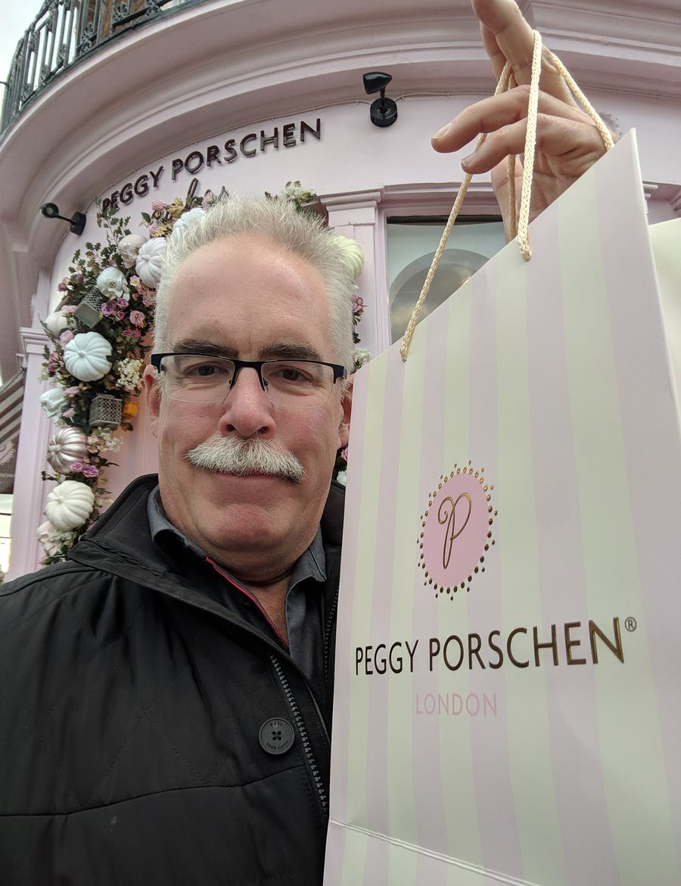

Peggy Porschen · Belgravia, London · October 2024
England · London
Not every memorable stop on a journey announces itself with grandeur. Some of the best discoveries are decidedly pink, faintly absurd, and selling layer cakes in a neighbourhood of Georgian townhouses and foreign embassies.
Peggy Porschen's flagship cake parlour on Ebury Street in Belgravia is exactly that kind of discovery — a pastel confection in a city that otherwise traffics in Portland stone and grey skies. The floral arrangements, the striped bags, the blush facade: it is London doing something it rarely permits itself to do, which is to be unambiguously cheerful.
The bag was brought home. The cakes did not survive the afternoon.
Context & Chronicle
London began as a Roman trading post established around 47 CE on the north bank of the Thames — a bridgehead settlement the Romans called Londinium. By the 2nd century it had grown into the largest city in Roman Britain, complete with a forum, amphitheatre, and defensive walls. When the Romans withdrew in 410 CE, the city was largely abandoned; the Saxons who resettled it preferred open ground to the west, near what is now the Strand. The medieval city eventually reoccupied the old Roman footprint, and the outline of those ancient walls can still be traced in the street pattern of the modern City of London.
In September 1666, a fire beginning in a bakery on Pudding Lane consumed 13,200 houses, 87 parish churches, and most of the medieval city in four days. Christopher Wren was commissioned to rebuild — producing not only the new St. Paul's Cathedral but 51 city churches, each a small masterpiece. The fire was catastrophic, but it also cleared the plague-ridden tenements of the old city and created the opportunity for one of the great urban reconstructions in European history.
The neighbourhood surrounding Peggy Porschen was built largely between 1825 and 1855 by developer Thomas Cubitt, who transformed marshy ground owned by the Grosvenor family into the stuccoed, columned terraces that define Belgravia today. Named after Belgrave in Cheshire (a Grosvenor estate), it was conceived from the outset as an aristocratic quarter to rival Mayfair — and largely succeeded. It remains one of the most expensive residential addresses in the world, occupied today by embassies, oligarchs, and the occasional celebrated cake shop.
London's greatness was inseparable from its river. For centuries the Thames was the busiest commercial waterway in the world, and the Port of London was the engine of an empire that at its peak covered a quarter of the Earth's land surface. The Legal Quays east of London Bridge handled goods from every continent; by the 19th century, the enclosed docks at Wapping, Rotherhithe, and the Isle of Dogs processed more cargo than any port in history. Container shipping eventually ended the old dock economy, and what was derelict industrial riverfront in the 1970s is now Canary Wharf.
Between September 1940 and May 1941, the German Luftwaffe dropped tens of thousands of tonnes of bombs on London, killing more than 30,000 civilians and destroying or damaging over a million buildings. The East End bore the greatest damage; the City and Southwark were devastated. Postwar reconstruction was uneven — much of it hasty and undistinguished — but London recovered to become, by the late 20th century, one of the world's great cosmopolitan capitals, a city of extraordinary cultural and linguistic diversity.
Peggy Porschen — born Peggy Buschkühle in Germany — trained at Le Cordon Bleu in London and established her cake atelier in 2003. Her Belgravia parlour on Ebury Street opened in 2010 and quickly became one of the most photographed facades in London, its seasonal floral installations drawing queues around the block. The pale pink exterior changes with the seasons — harvest pumpkins in autumn, roses in summer — and has inspired a minor genre of London travel photography. The cakes are, by all accounts, extraordinary.
"London is not a city that reveals itself to you. It is a city that rewards those willing to turn down an unexpected street, follow an unplanned lunch, and carry home a striped bag on the Tube."
Belgravia occupies a curious position in the London imagination. It is not bohemian like Soho, not villagey like Hampstead, not gritty like Bermondsey. It is composed, correct, expensive — a neighbourhood that has always known exactly what it is, and sees no particular reason to change. The white stucco terraces that face the garden squares were designed to project confidence, and they still do, two centuries on.
Ebury Street, where Peggy Porschen sits, has its own small literary history. Mozart lodged nearby at age eight during his first London visit. George Bernard Shaw lived on the street for years. The Marquess of Westminster drank at the local pub. These details accumulate in London the way they accumulate nowhere else — layers of the significant and the mundane pressed together until it becomes impossible to separate one from the other.
The shop itself is a deliberate act of optimism in a city that often prides itself on irony. The seasonal floral arch framing the entrance — pumpkins and dahlias in October, roses in June — is changed by a team of florists over the course of a single night, arriving after closing time and working until dawn. It is, by any reasonable accounting, an absurd amount of effort for a cake shop facade. London appreciates the effort.
This is, in the end, what travel does best: it deposits you, unannounced, in front of something you had no intention of encountering — something pink, and faintly absurd, and rather wonderful — and gives you a story to carry home alongside the striped bag.